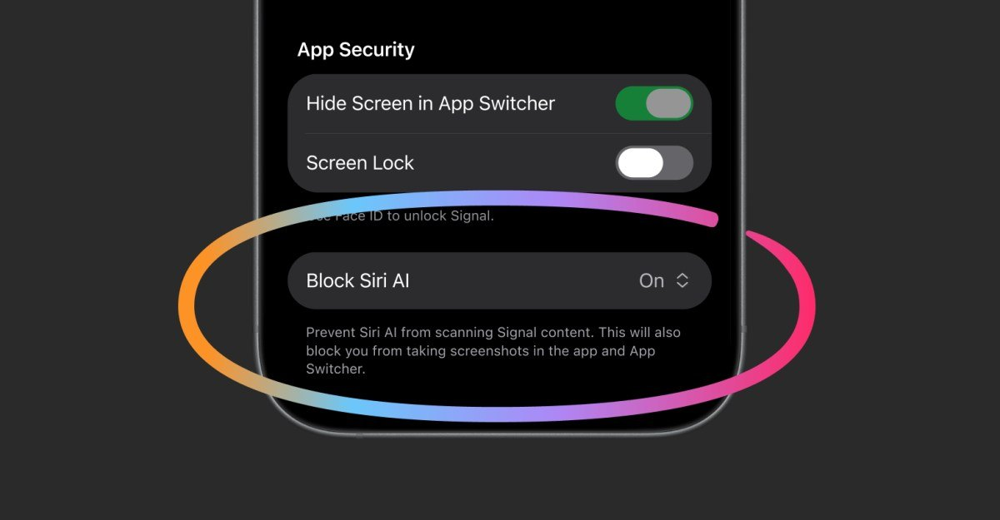
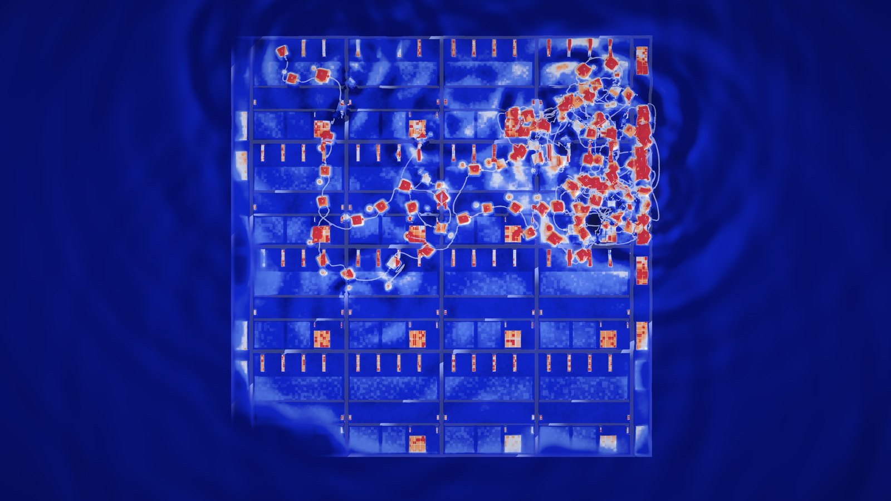

头条 一
Anthropic 数学家 Levent Alpöge 11 月 20 日在个人网站发布说明，称与 Claude 合作证明了黎曼猜想，并推广到广义形式，附 Lean 形式化代码。Verge 指出尚无独立验证，Anthropic 未置评。陶哲轩称这份证明体量巨大，消化需要时间。
克雷研究所规定解答须发表并经两年检验才能考虑授奖。目前的信息只是“作者声称”加“代码可编译”，离“被接受”还很远。
来源：The Verge
头条 二

图片来源：The VergeSignal 在安卓和 iOS 上默认限制截屏，目的是不让系统级 AI 读取屏幕上的聊天。总裁惠特克称，系统层的智能体集成对应用层隐私是“生存威胁”，并要求苹果、谷歌、微软给开发者提供控制工具。Signal 承认办法并不完整，macOS 上还做不到。
应用方第一次公开拒绝系统级 AI 的读取权限，而且手段只是关掉截屏。用户可在设置里重新打开，但 Signal 警告这会破坏隐私保证。
来源：The Verge
头条 三

图片来源：Architect LabsArchitect Labs 11 月 18 日称，其 AI 系统从指令集到最终版图独立设计了 Frostbite 处理器，基于交互网，7nm 工艺，500MHz。25 项测试的每瓦性能几何平均是双发射顺序核的 4.59 倍，留出的 15 项为 3.83 倍。公司未披露对比的 CPU 型号。
数字全部来自厂商自家综合与仿真，文中未提流片，也没有第三方复测。值得看的是它用形式化规格约束 AI 的做法，是否成立要等后续公开 RTL。
来源：Architect Labs
证明可以先发出来，检验得慢慢来。“声称”和“被接受”之间隔着两年规则，别把前者当后者。
Signal 能做的只是关掉截屏，凸显应用层缺少对系统 AI 的控制权，这得由平台方来补。
Frostbite 的看点是形式化规格而非 4.59 倍，没有第三方复测之前，这个数字只能算厂商的自述。